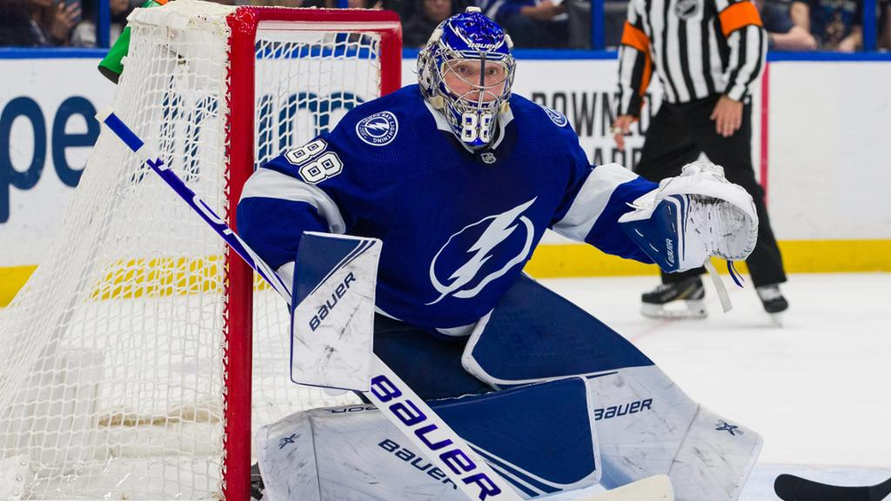
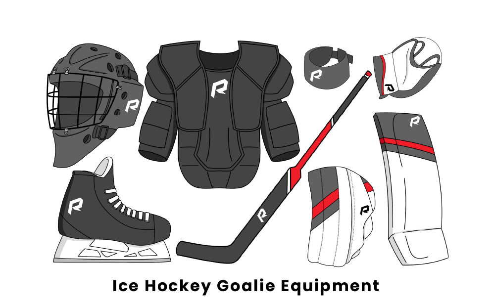

Goaltending is one of the most difficult positions to play in professional hockey. The goalie is the only player who stays on the ice for the entiregame, where as normal players only stay on the ice for about 1 minute. The goalies are also wearing lots of equipment, which weighs them down and makes it very difficult to skate. Today I will be talking about what a goaltender does during a game and the different equipment they wear, the history of the most important goaltender equipment, the mask, and some of the most famous goalies of all time. Pay attention, as there is a quiz on the last page.
Goalies are extremly important to a hockey team as they are the ones guarding the goal. A standard goal is 6 ft wide by 4 ft tall, which makes it very difficult for a goaltender to protect it. The opposing team are shooting a puck at the net at speeds of up to 160 km/h, so a goalie has to havevery fast reflexes and good hand-eye coordination to stop it. Goaltenders stay in the net for most of the game, only leaving the ice near the end of the game if their team is losing, to get an extra player on the ice. This is risky, as that leaves your net open for the other team to score in very easily. Goaltenders can only stay on their side of the ice, but rarely leave their crease, which is a blue half-circle around their net.

Their are 8 main parts of a goalie's equipment: